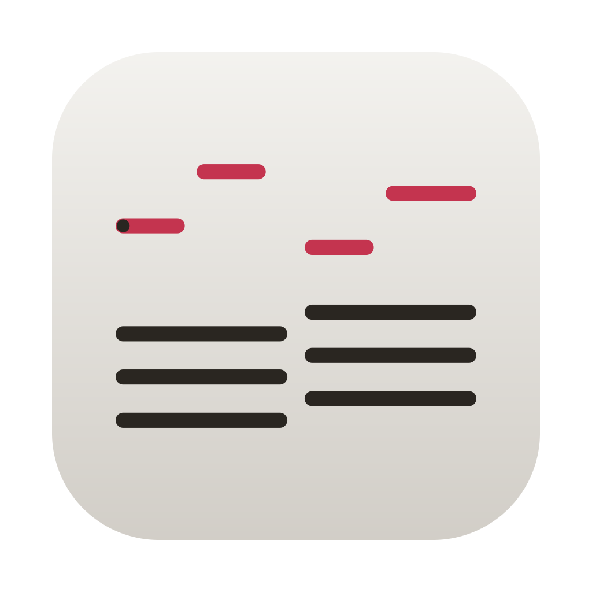
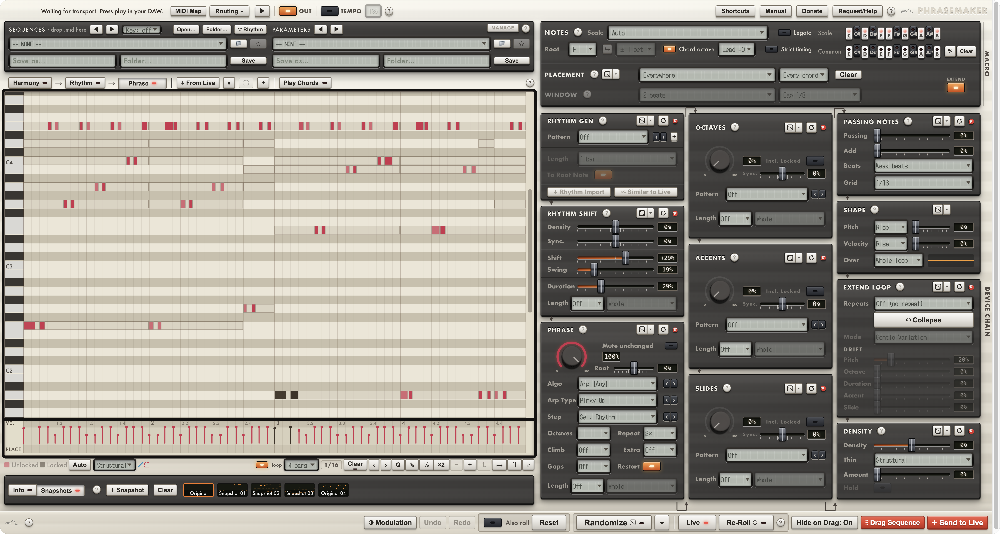
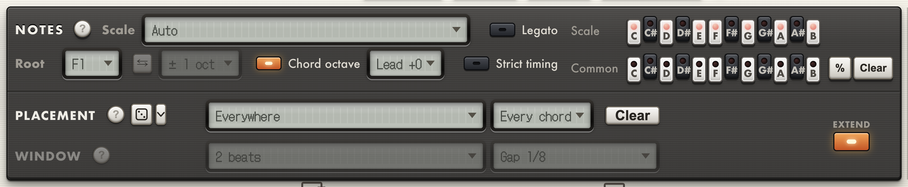
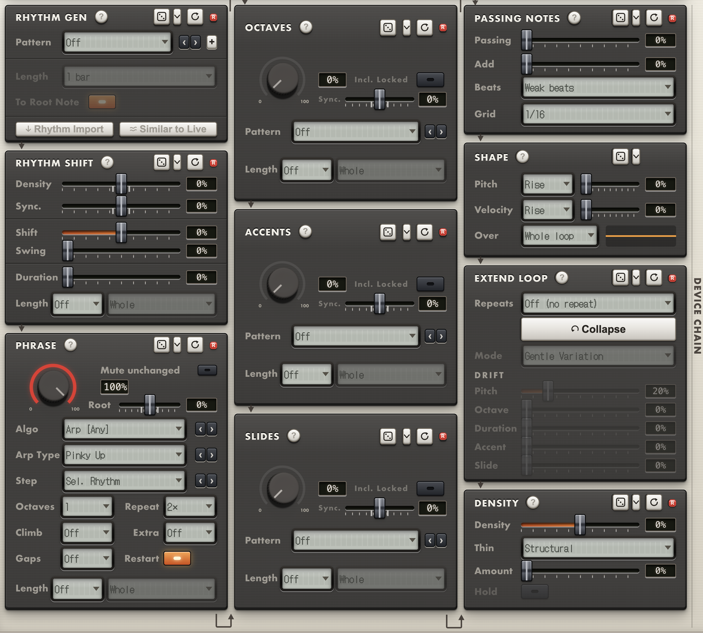

PhraseMaker Beta
Chords in, melody out. Give it a progression and a rhythm, and it writes the melody over them.
PhraseMaker writes melodies from your chord progression, beyond a normal arpeggiator. Pull the chords from a clip in Live, drop a MIDI file on it or play them on your keyboard, give it a rhythm, and it writes a phrase that follows the harmony. Every note that lands on a chord change is a note of that chord, and the notes in between can step through the scale.
It's built on the same “controlled randomness” as MutationStation. Lock the notes you like and re-roll the rest. A chain of devices then shapes the line with octave jumps, accents, slides, passing notes, density and where in the bar it plays.
1Chords
Pull the progression from a clip in Live, drop a MIDI file on it, paste it from Chordinator, or hold chords on your keyboard.
2Rhythm
Pick a pattern, import one from a clip, or draw your own hits.
3Melody
The phrase is written over the chords at once. Re-roll until it sings, then drag it into your DAW.
Already have it? Manage on Gumroad ↗

Chords in, melody out
The piano roll has three views. Harmony holds the chords, Rhythm holds when notes play, and Phrase is the melody the two make together. Change the chords or the rhythm and the phrase is written again straight away.
Pick an algorithm to decide how the line moves. Hook over Chords and Euro Hook carry one motif across the progression. Approach, Run-up and Suspend & Resolve make the chord change itself the thing you hear. Arp walks each chord, with its own order, grid and options.
Play Chords skips the editing: hold a chord on your keyboard and the phrase is rewritten over it as you play.

Calls and answers
Placement decides where the phrase plays around each chord change. Put it before the change, after the stab, or in call-and-response pairs, and the zones show in a strip under the roll where you can drag them around.
The first zone becomes the motif and the others are written from it. An answer plays the zone before it upside down and comes to rest on the chord's root. For a call-and-response line, tick Placement and Window in the list under Randomize’s ▾ and press Randomize.
The device chain
Each device has its own amount and its own dice. Move Accent and only the accents change. ⟲ gives one device fresh dice, ⚄ gives it new settings, and switching off its R keeps its roll while you re-roll everything else.
The rhythm devices (Rhythm Generator, Rhythm Shift, Density, and the Add half of Passing Notes) decide when notes play. Octaves, Accents, Slides, Passing Notes and Shape then work on the pitches. Shape gives the phrase a pitch arc and dynamics, rising, falling or arching over a bar, a chord or the whole loop.

Writing the melody
- Chords from anywhere. Pull them from the clip Live is showing, drop a .mid on the Harmony view, paste a progression copied in Chordinator, or play them in with Play Chords.
- Chord tones on the changes, the scale in between. The scale is read from each pair of chords, or you click your own.
- Common tones. Light a note and it's added to every chord, so it can run through the line like a pedal.
- A rhythm generator with groups for trance and lead lines alongside acid, house and dub patterns. Or take the rhythm from a MIDI or audio clip in Live.
- My rhythms. Save the roll's rhythm with a name and a family. Chordinator and MutationStation list it too.
- Chord octave and Lead. Keep the melody in the chords' octave, or put it one or two octaves above.
- Locks. Click a note to lock it and every device works around it.
Shaping and keeping it
- Octave jumps, accents and slides, each as a chance per note or as a fixed pattern that lands in the same place every bar.
- Passing notes that step off the chord onto the scale and back, and extra short notes in the gaps.
- Density and Thin to add notes or take them away by a rule, such as keeping only the downbeats.
- Extend Loop doubles or quadruples the phrase, each repeat a variation of the first bar.
- Snapshots keep every take you drag out or save, so a re-roll never loses one you liked.
- Sequence and parameter presets, with folders, favourites and drag-and-drop .mid import.
- Eight modulation lanes that write envelopes for any parameter in your Live set.
Why standalone
PhraseMaker runs as its own app, not a plugin, and reaches your DAW the way outboard MIDI gear does. If your DAW crashes, PhraseMaker and every take in its Snapshots strip are safe. If PhraseMaker crashes, your DAW keeps running.
Requirements
macOS 12 or later on Apple Silicon, and any DAW that takes MIDI.
Intel Macs: untested, should work.
Signed and notarised for macOS.
Getting it into your DAW
The app shows up on your Mac as a MIDI device called PhraseMaker. Set a track to listen to it, arm it, and play. Or drag the phrase onto a track as a .mid clip, no setup needed.
Extra integration with Live
A control script comes with the app, shared with the other JamWare apps. Install it and you get ↓ From Live for chords, ↓ Rhythm Import, and the app's play key starting and stopping Live.
Send to Live writes a Session clip with the notes and your modulation lanes. Dragging out a MIDI file works in any DAW, notes only.
Control it from MidiMirror
In MidiMirror's JamWare mode, your controller becomes PhraseMaker's front panel. Every knob, fader and key is mapped and labelled, with nothing to set up.